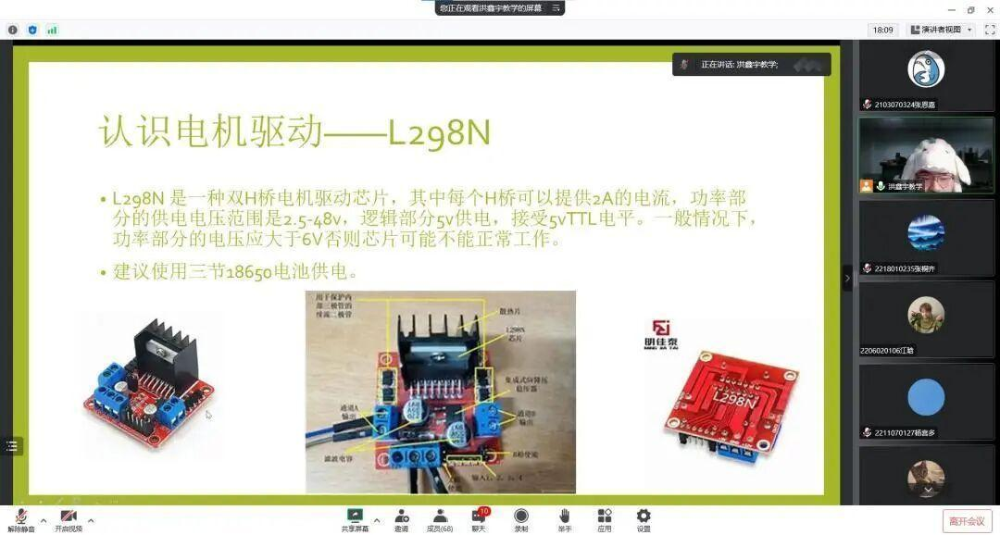
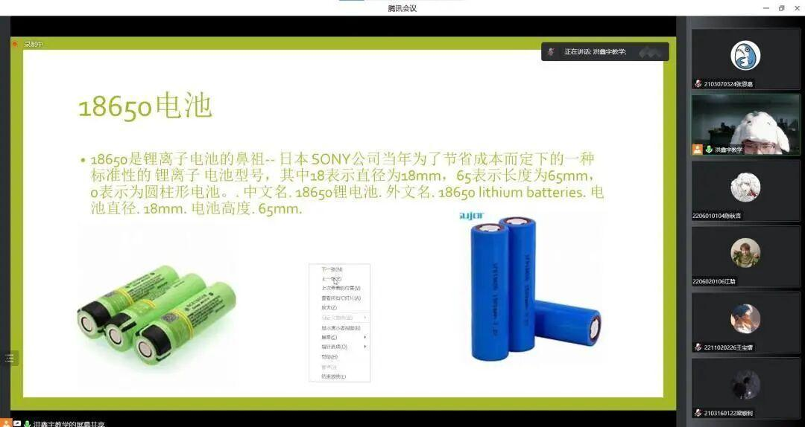
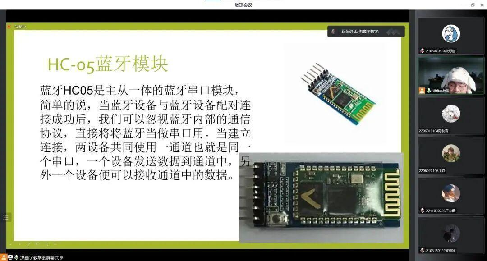
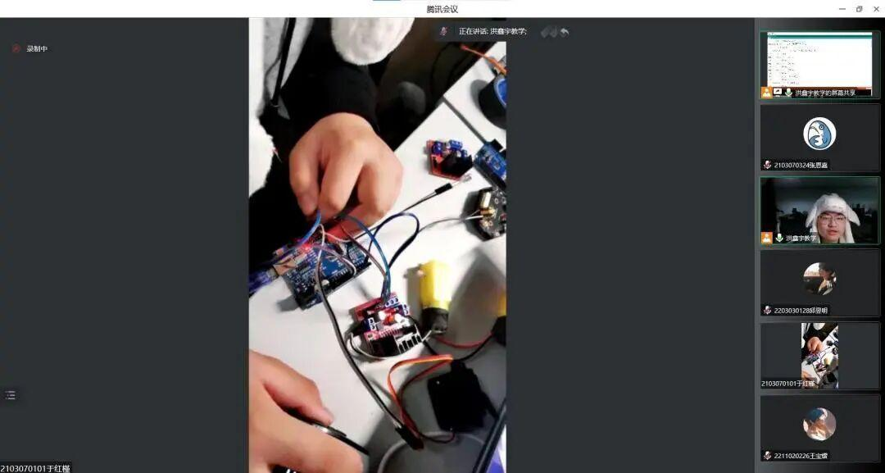
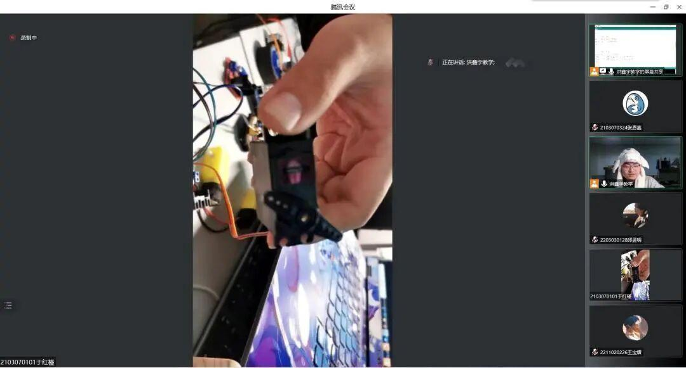
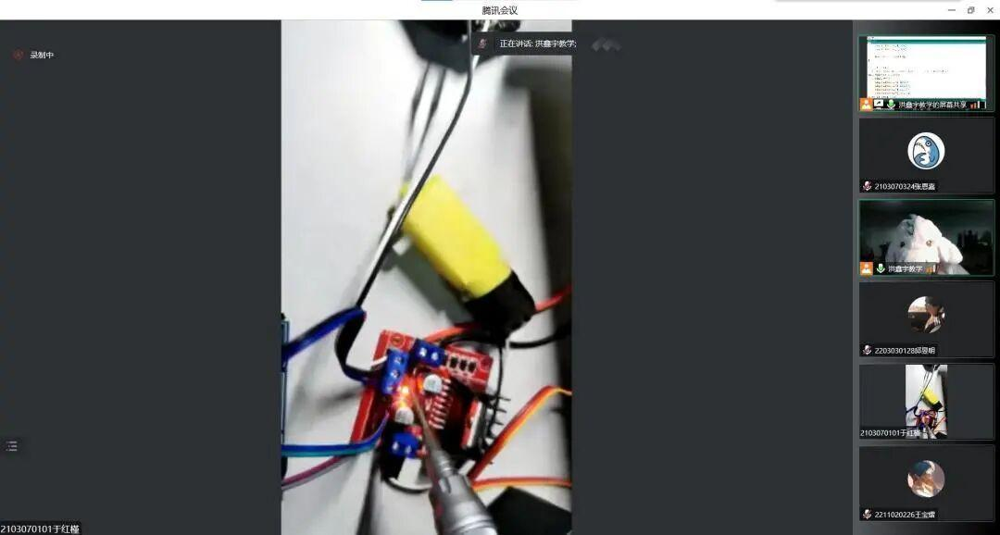

战队日记 | 理工杯教学介绍
本次理工杯教学的任务是教零基础参赛的同学做一辆基础的蓝牙小车，并通过PPT、视频和答疑的方式教同学们做好蓝牙小车，以达到基本的参赛门槛。
下面是蓝牙小车基础器件的介绍。



蓝牙小车是否能顺利的跑起来，很大程度上取决于代码写的是否正确，为了让零基础同学迅速上手Arduino编程，洪鑫宇学长在这里对Arduino的基础语法进行了讲解,下图中使用的是Arduino IDE软件
实际组装蓝牙小车时，使用杜邦线接线通常很混乱，为了解决同学们不知道如何接线的问题，由于红槿学姐进行实际接线展示，下图分别为Arduino UNO、L298N、舵机的接线过程



图片|沈理电协
文字|恩嘉
审核|李现亮